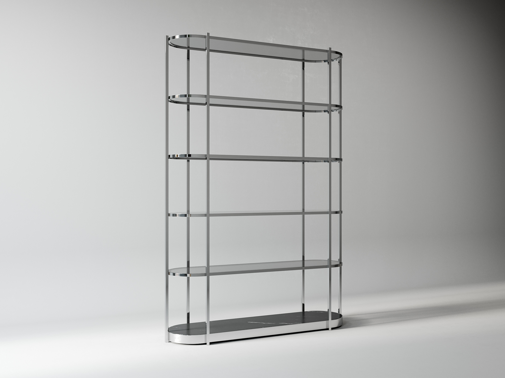

Пост для ТГ-канала ТОН:
спотлайт на GEN-GROUP
Гостевой пост для канала ТОН - площадка публикует его от себя. Тон не рекламный от первого лица, а как ТОН представляет резидента: спокойно, по делу, в формулировках со страницы события. Ведём на регистрацию ТОН. Ниже - превью поста и текст на выдачу площадке.
Превью поста ТОН
Т ТОН · пространство для дизайнеров канал


Резидент встречи 8 июля - GEN-GROUP
Производство изделий из металла, стекла и зеркал. Нержавеющая сталь как акцент в интерьере и решение для душевых, цветовое разнообразие нитрида, необычные фактуры и декоры в наполнении перегородок, металлообработка для дизайнерских зонирующих систем.
На встрече «Премиальные решения для интерьера» покажут, какие перегородки, столы, стеллажи и зеркала можно сделать на заказ, как металл и стекло работают на зонирование и акцент, и разберут кейс: запрос дизайнера переходит в готовое изделие.
8 июля, 15:00, ЗИЛ, ул. Архитектора Щусева, 4 к2.
Зарегистрироваться на встречу
Производство изделий из металла, стекла и зеркал. Нержавеющая сталь как акцент в интерьере и решение для душевых, цветовое разнообразие нитрида, необычные фактуры и декоры в наполнении перегородок, металлообработка для дизайнерских зонирующих систем.
На встрече «Премиальные решения для интерьера» покажут, какие перегородки, столы, стеллажи и зеркала можно сделать на заказ, как металл и стекло работают на зонирование и акцент, и разберут кейс: запрос дизайнера переходит в готовое изделие.
8 июля, 15:00, ЗИЛ, ул. Архитектора Щусева, 4 к2.
Текст на выдачу ТОН
Пост для канала ТОН (2 фото: dsc3228 + vl2-1)
Резидент встречи 8 июля - GEN-GROUP Производство изделий из металла, стекла и зеркал. Нержавеющая сталь как акцент в интерьере и решение для душевых, цветовое разнообразие нитрида, необычные фактуры и декоры в наполнении перегородок, металлообработка для дизайнерских зонирующих систем в премиум-сегменте. На встрече «Премиальные решения для интерьера» вы узнаете: - какие перегородки, столы, стеллажи и зеркала можно сделать на заказ; - как использовать металл и стекло для зонирования и создания акцентов; - разбор кейса: запрос дизайнера из реального проекта переходит в живую реализацию. Живые образцы, технические параметры, ответы напрямую. 8 июля, 15:00 ЗИЛ, ул. Архитектора Щусева, 4 к2 Регистрация: https://yoursdesign.ru/events/premium-mebel-metall-steklo-spa
Тон: формулировки взяты из блока GEN-GROUP на странице ТОН - площадке не придётся переписывать под свой голос. Мы не тянем одеяло: это один резидент из трёх, слоганов брендов и «кастома» нет. Если ТОН постит всех троих одним анонсом - этот текст встаёт как абзац-врезка про нас.
Фото для поста
Оба кадра реальные, из папки события. При желании ТОН может взять только один - обложку.
Три этапа собраны. По вашему финальному ОК: письмо экспортирую в email-безопасный HTML для рассыльщика, посты отдам с фото в исходном качестве и готовыми подписями. Тексты прошли анти-слоп: без «эксклюзив/премиум без обоснования», без em dash, без восклицаний.